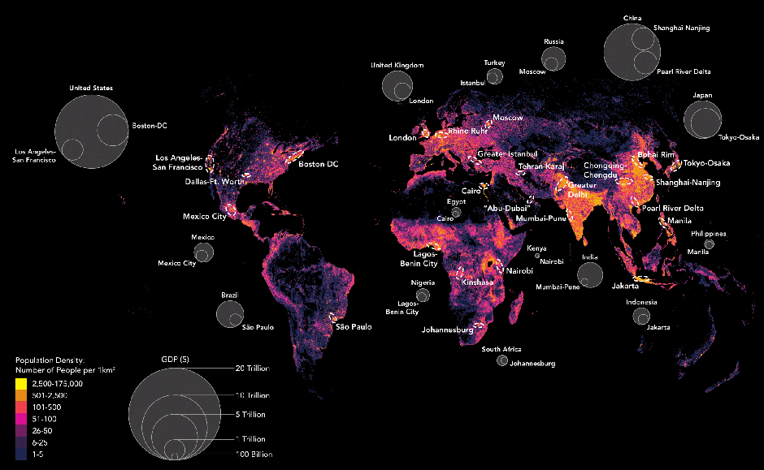

Exercise 0 - GIS News Article
How Hyperconnected Cities Are Taking Over the World, According to Parag Khanna, CityLab, Spring 2016
Link to Article
This article reports an interview by Tanvi Misra about Connectography: Mapping the future of the global civilization with Parang Khana, the author that explores modern connectivity with the aid of cartography.
Khana argues that cities are the current global focus of power and that countries are losing their central part in the global stage. Big superstar cities are gaining more and more importance as personal interconnectivity becomes easier thanks to globalization and the easier movement of people around the world. Secondary cities also have a role becoming providers of cheaper services to the major metropolis, as long as they can keep themselves connected.
He also explores the shortcommings of connectivity like the issue of allowing free movement of people also allows free movement of terrorists and the ever growing inequality of late times. Technologies, agencies and institutions are his cure for these ills.
Showcasing his work on reimagining the regional division of the United States, he talks about how reducing inequality can be achieve by connecting poorer regions with the rich ones and make cities cooperate instead of competing between each other for the same positions in the industry.
He closes by talking about a couple of maps on his book that he likes. One is mapping the global population and comparing the size of many countries major cities with the total population of each country, showing a measurement of the demographic extent of big cities and using it as a proxy for showing the power of big cities. The second one is a map of Eurasia and its major transportation and communication links, showing how the Eurasian continent and its modern iteration of the silk road is already acting as one seamless heavily connected region.